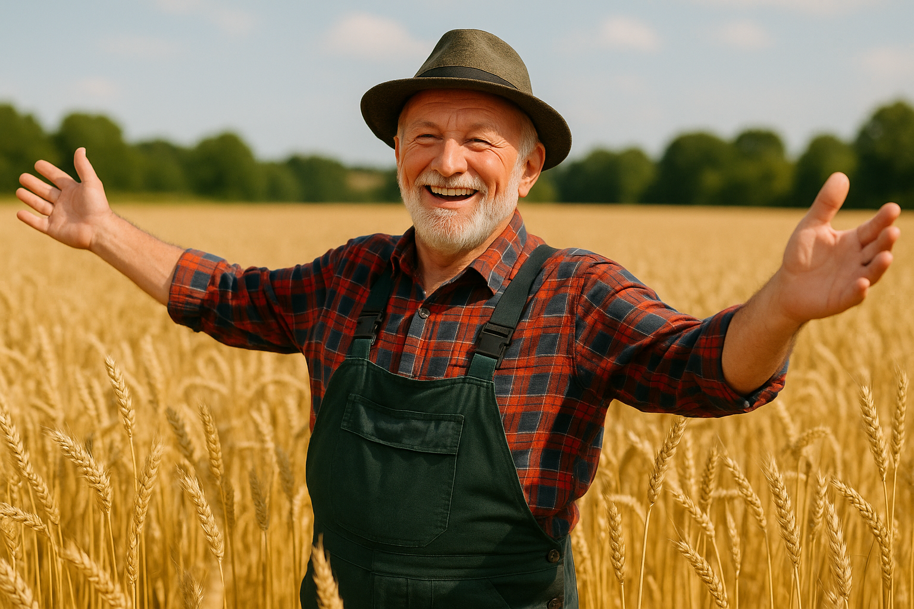

O Campo

As plantações fornecem alimentos essenciais e sustentam a vida na cidade.

Fazendas produtivas são o coração do campo, conectando-se diretamente com a sociedade urbana.
A Sociedade Urbana
Empresários urbanos e produtores rurais unem forças em prol de um mercado comum.

A interação entre moradores urbanos e rurais enriquece a cultura e a economia local.
A Conexão
Descubra como o campo e a cidade se complementam, criando um ecossistema próspero e vibrante.

A tecnologia urbana moderniza e otimiza as práticas agrícolas.

Parcerias produtivas entre o campo e a cidade impulsionam o desenvolvimento econômico.